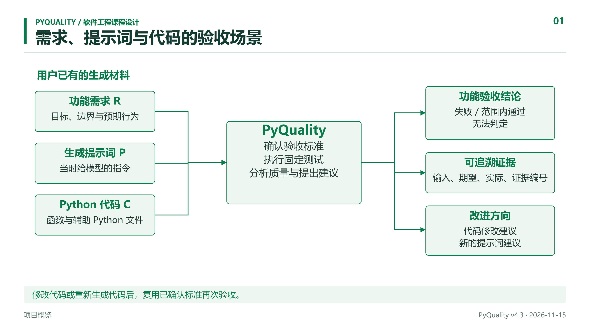
需求、提示词与代码的验收场景
说明系统输入、输出与用户价值。
讲述重点：先确定代码应该完成什么，再用执行证据判断当前实现。
参考页码与代码依据
参考 PDF 第 3, 12 页
README.mddocs/workflow_acceptance.md
28 张配图，覆盖需求场景、用例、系统设计、核心判定、执行隔离、数据模型、质量保障及三个公开案例。全部图片使用 draw.io 桌面版导出，另附 28 页总工程和每图独立的 .drawio 文件。

说明系统输入、输出与用户价值。
讲述重点：先确定代码应该完成什么，再用执行证据判断当前实现。
参考 PDF 第 3, 12 页
README.mddocs/workflow_acceptance.md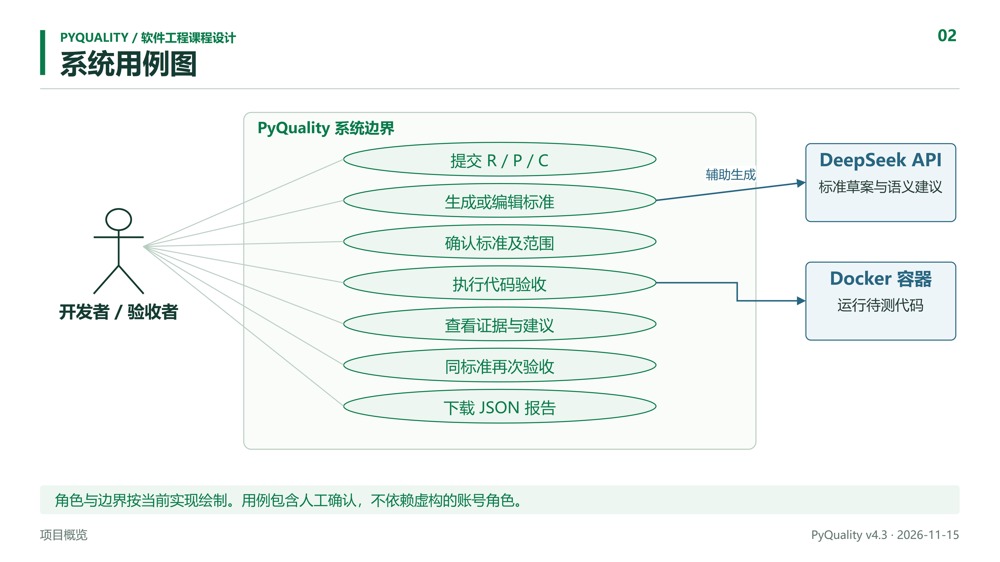
展示使用者与外部模型、执行环境的交互边界。
讲述重点：当前核心角色是提交代码并确认标准的开发者或验收者。
参考 PDF 第 10, 11 页
frontend/acceptance.htmlbackend/routers/acceptance.py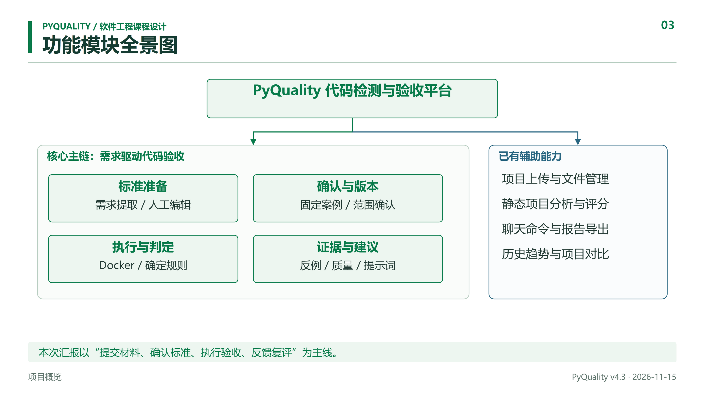
分清需求驱动验收主链和既有项目质量分析能力。
讲述重点：重点讲验收闭环，项目分析与聊天命令作为已有辅助能力。
参考 PDF 第 5, 19 页
README.mdbackend/main.pybackend/acceptance/quality.py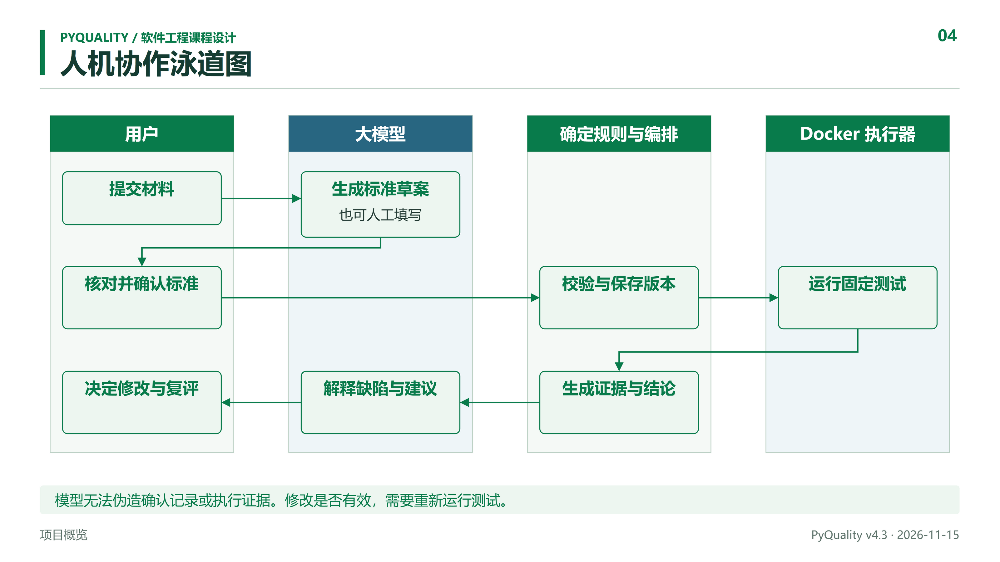
明确人、模型、确定规则和运行环境分别负责什么。
讲述重点：人确认标准，模型提建议，系统保存事实并根据真实执行结果判定。
参考 PDF 第 13, 14, 15 页
backend/acceptance/standards.pybackend/acceptance/service.pybackend/acceptance/verdict.py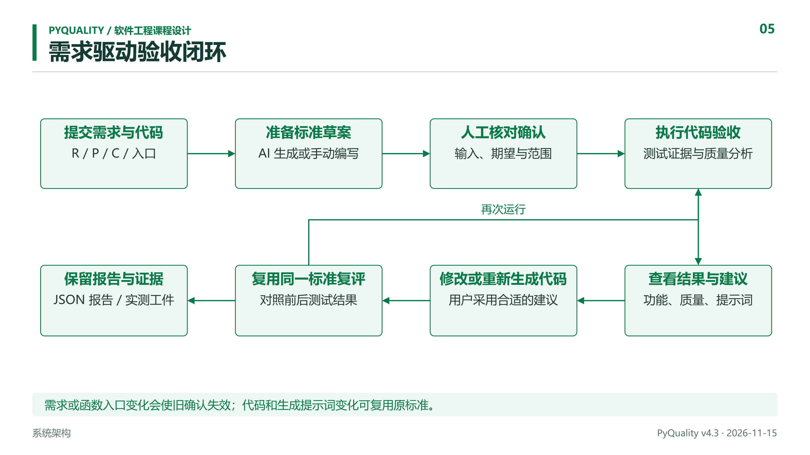
展示从材料输入到修改复验的完整业务流程。
讲述重点：标准确认之后执行代码，修改候选代码后保持标准不变。
参考 PDF 第 12, 17, 18 页
docs/workflow_acceptance.mdfrontend/acceptance.js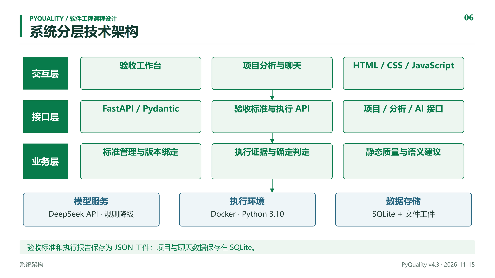
说明前端、后端、模型、执行与存储的实际技术栈。
讲述重点：前端采用原生 HTML、CSS、JavaScript，后端由 FastAPI 编排验收。
参考 PDF 第 20, 22 页
backend/main.pybackend/config.pyfrontend/acceptance.htmlbackend/acceptance/runner.py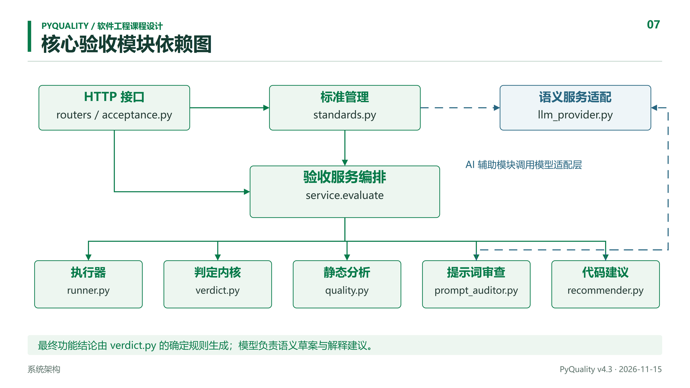
以代码模块展示服务编排与判定内核的职责。
讲述重点：这是服务模块协作图，不代表系统实现了多 Agent 框架。
参考 PDF 第 21 页
backend/acceptance/service.pybackend/acceptance/standards.pybackend/acceptance/recommender.py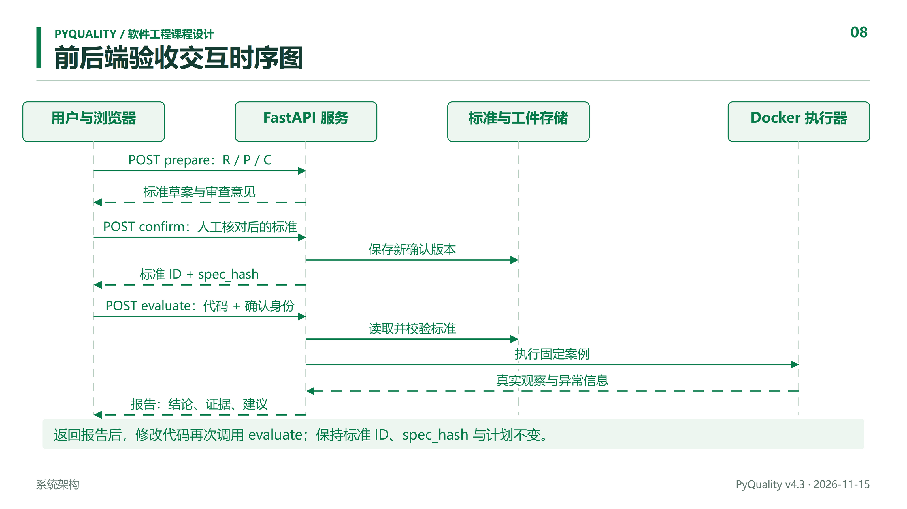
说明准备、确认、执行和复评接口的调用顺序。
讲述重点：确认接口保存标准身份，后续验收携带标准 ID 和摘要。
参考 PDF 第 23 页
backend/routers/acceptance.pyfrontend/acceptance.js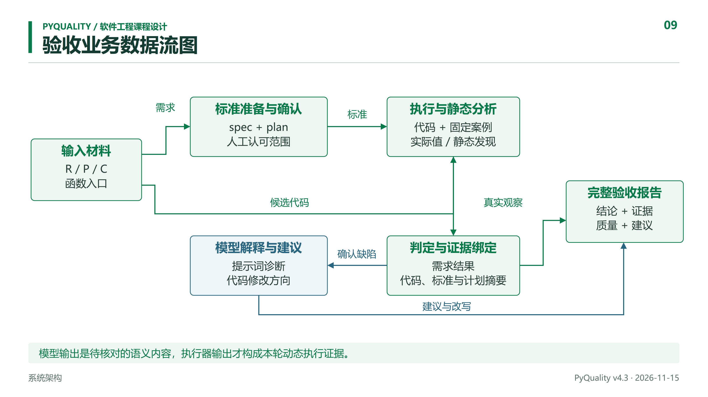
展示 R/P/C、标准、执行观察和报告之间的数据流。
讲述重点：数据流区分标准数据、实际执行事实与模型建议。
参考 PDF 第 18, 23, 26, 49 页
backend/acceptance/service.pybackend/acceptance/models.py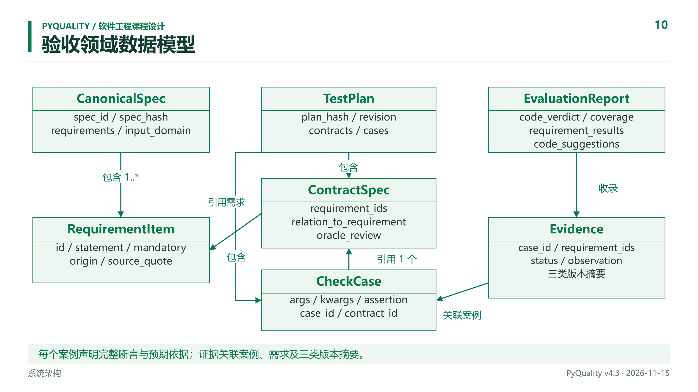
用类图形式表达规格、契约、案例、证据、报告的关系。
讲述重点：该图是 Pydantic 领域模型关系，不是 SQLite 表结构。
参考 PDF 第 25, 29 页
backend/acceptance/models.py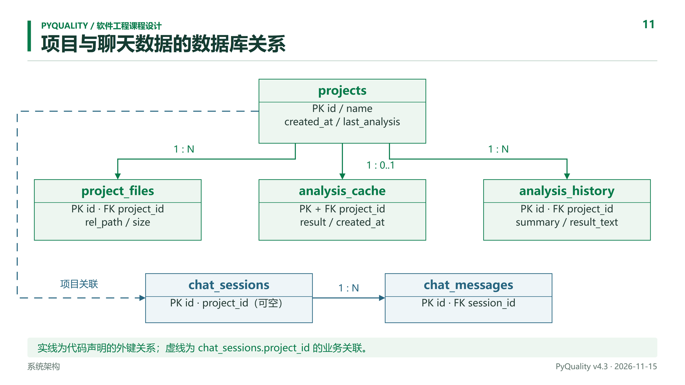
展示 database.py 实际创建的六张 SQLite 表和关键关系。
讲述重点：验收标准和证据采用文件存储，不属于这些 SQLite 表。
参考 PDF 第 24 页
backend/database.py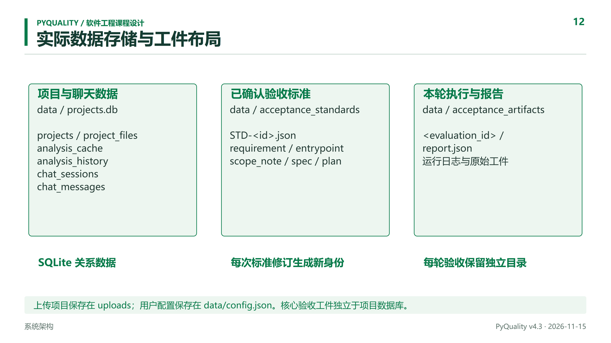
区分数据库、确认标准和执行工件的保存位置。
讲述重点：报告中的标准身份、计划摘要与证据都能回到留存文件。
参考 PDF 第 26, 45, 48 页
backend/database.pybackend/acceptance/standards.pybackend/acceptance/service.py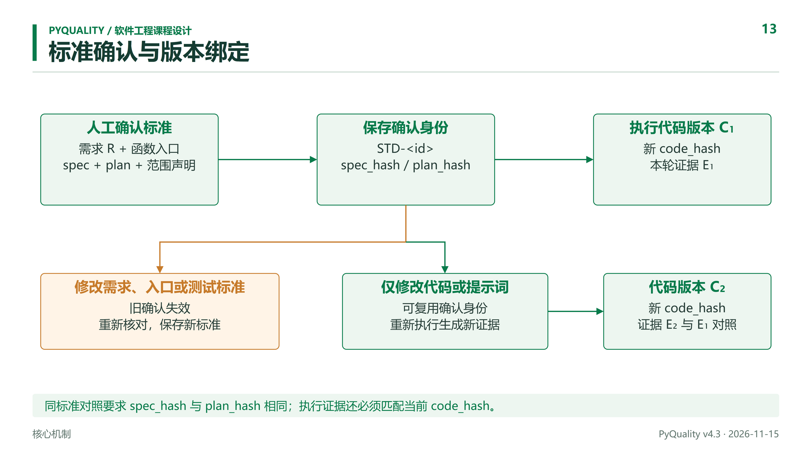
解释同标准复验的成立条件以及修改标准后的失效规则。
讲述重点：标准不依赖候选代码；代码改变后需重新执行，不复用旧执行结果。
参考 PDF 第 17, 26 页
backend/acceptance/standards.pybackend/acceptance/hashing.py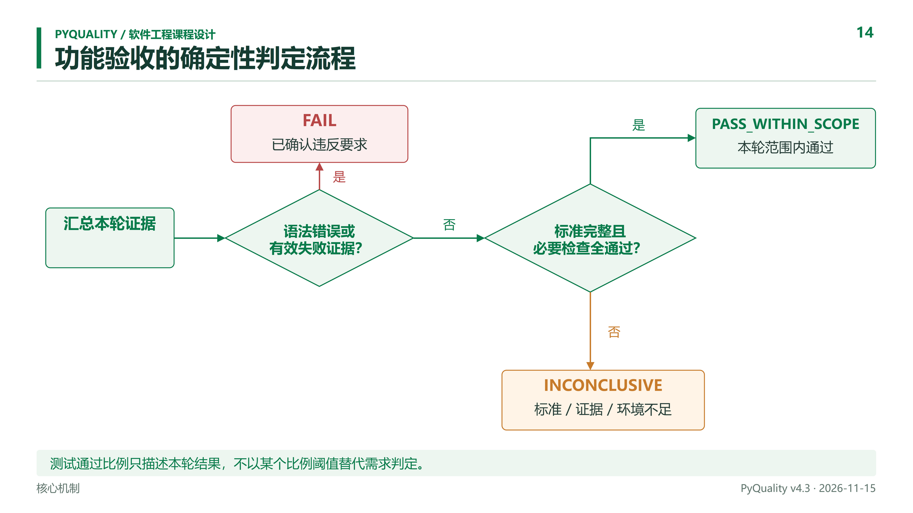
准确展示 FAIL、INCONCLUSIVE 和范围内通过的优先次序。
讲述重点：有有效失败证据先判失败，证据不足不能判通过。
参考 PDF 第 40 页
backend/acceptance/verdict.pybackend/acceptance/service.py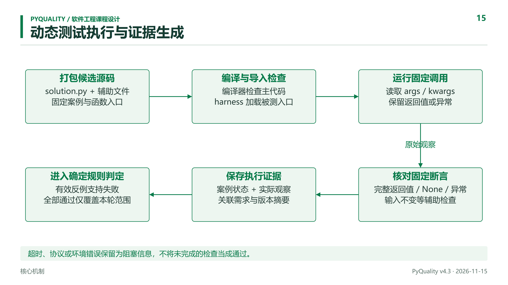
说明固定案例如何产生可用于判定的真实观察。
讲述重点：意外异常是失败证据，标准要求的异常可以通过；执行环境问题单独处理。
参考 PDF 第 31, 40 页
backend/acceptance/runner.pybackend/acceptance/checks.py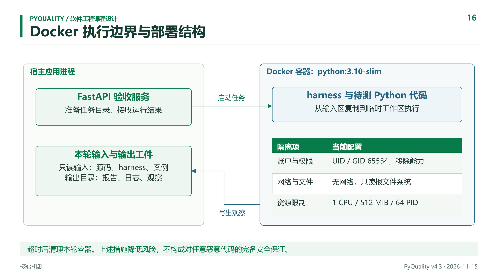
展示运行不可信候选代码时实际使用的隔离措施。
讲述重点：默认验收要求 Docker，开发豁免只适用于可信本地代码。
参考 PDF 第 20, 22 页
backend/acceptance/runner.pybackend/acceptance/environment.py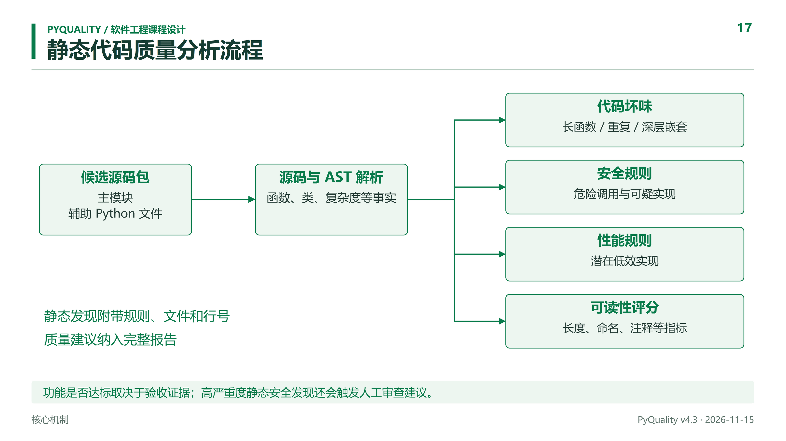
解释静态质量检查如何补充功能测试。
讲述重点：本图只列当前验收链实际接入的静态分析。
参考 PDF 第 28, 40 页
backend/acceptance/quality.pybackend/analyzers/parser.pybackend/analyzers/readability.py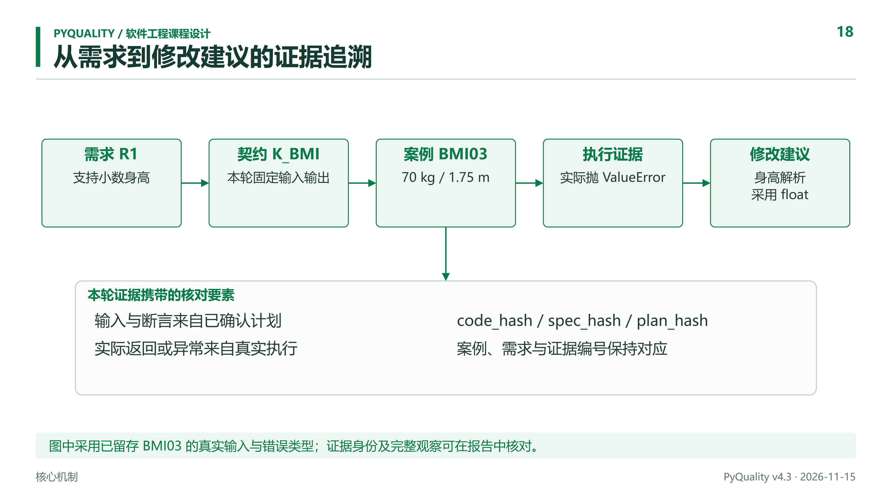
说明每条功能缺陷建议如何回到真实测试反例。
讲述重点：输入、期望与实际由后端从本轮计划及证据填入，模型不能改写这些事实。
参考 PDF 第 42, 43 页
backend/acceptance/recommender.pybackend/acceptance/hashing.pydocs/public_case/initial_report.json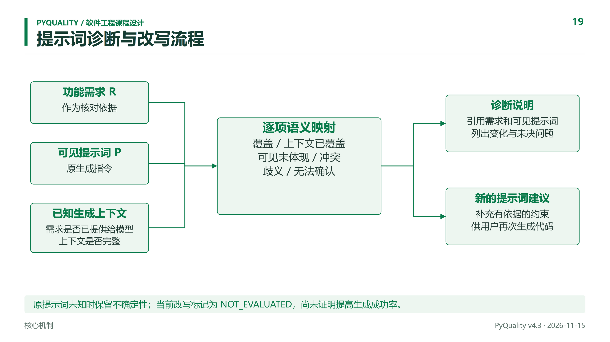
说明需求、可见提示词、上下文如何形成提示词诊断。
讲述重点：提示词分析与代码验收分别计算，建议效果需要重新生成代码后复评。
参考 PDF 第 13, 40 页
backend/acceptance/prompt_auditor.pybackend/acceptance/models.py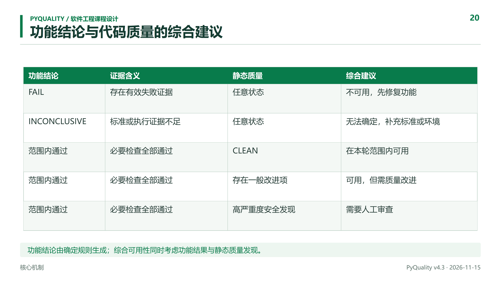
区分功能验收结论、质量发现与综合可用性。
讲述重点：相同的测试通过结论，仍可能因高严重度安全规则而需要人工审查。
参考 PDF 第 40, 43 页
backend/acceptance/service.pybackend/acceptance/models.py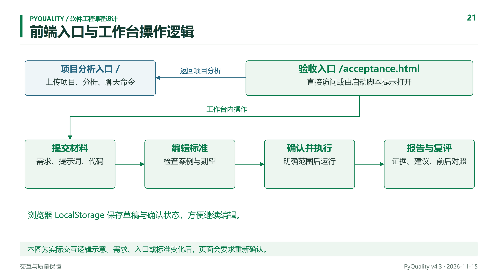
将实际单页工作流与项目分析入口对应起来。
讲述重点：验收工作台包含材料输入、标准编辑、执行和结果对照。
参考 PDF 第 50 页
frontend/acceptance.htmlfrontend/acceptance.jsbackend/main.py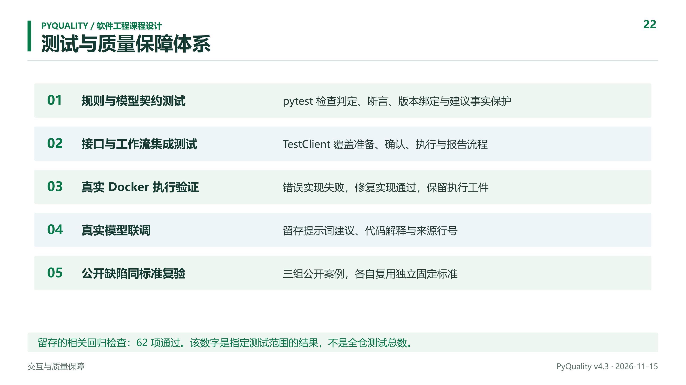
呈现离线规则测试、接口集成、真执行与模型联调的不同证据。
讲述重点：明确区分 mock 模型测试与真实 Docker、真实模型调用记录。
参考 PDF 第 51, 52, 60, 61, 62 页
tests/conftest.pytests/test_acceptance_workflow.pydocs/public_cases/verification.json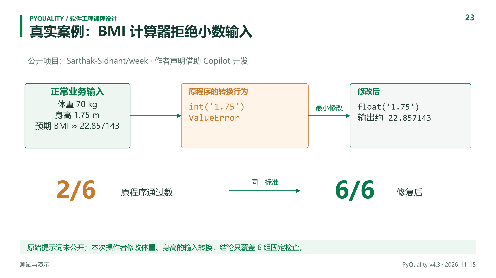
通过公开项目展示常见输入导致的运行异常。
讲述重点：上游按米读取身高，但使用 int 转换；修改两处输入转换后同标准通过。
参考 PDF 第 40, 62 页
docs/public_case/summary.jsondocs/public_case/provenance.jsondocs/public_case/initial_report.jsondocs/public_case/repaired_report.json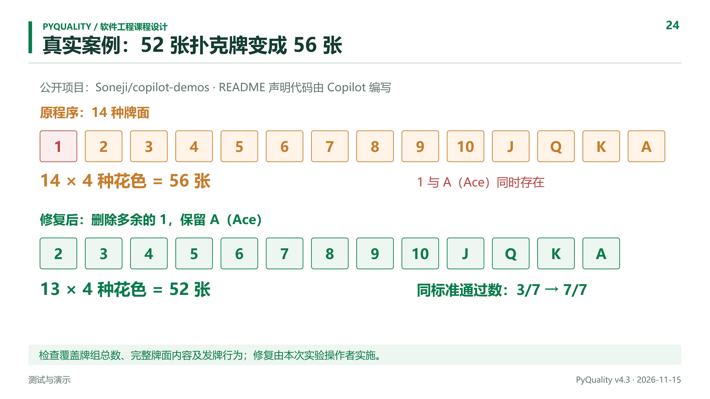
展示程序能够运行但生成内容违反功能要求的情况。
讲述重点：数字 1 与 Ace 被同时列为牌面，导致四种花色各多一张牌。
参考 PDF 第 40, 62 页
docs/public_cases/copilot_cards/summary.jsondocs/public_cases/copilot_cards/provenance.jsondocs/public_cases/copilot_cards/initial_report.json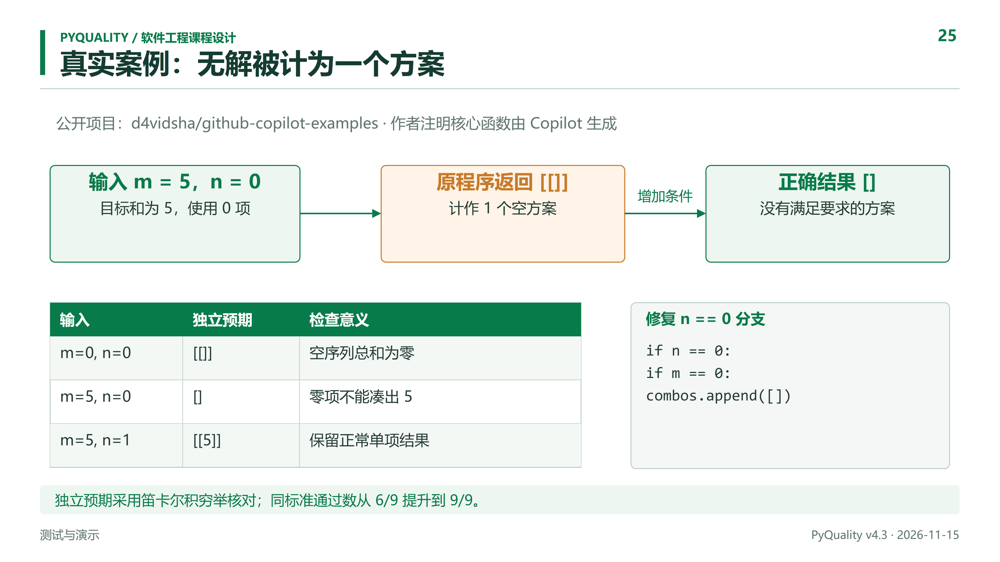
解释零项边界中的空列表与一个空方案的区别。
讲述重点：原函数自己处理 n=0；只有目标和也为零时，空方案才满足要求。
参考 PDF 第 40, 62 页
docs/public_cases/copilot_zero_terms/summary.jsondocs/public_cases/copilot_zero_terms/provenance.jsondocs/public_cases/copilot_zero_terms/initial_report.json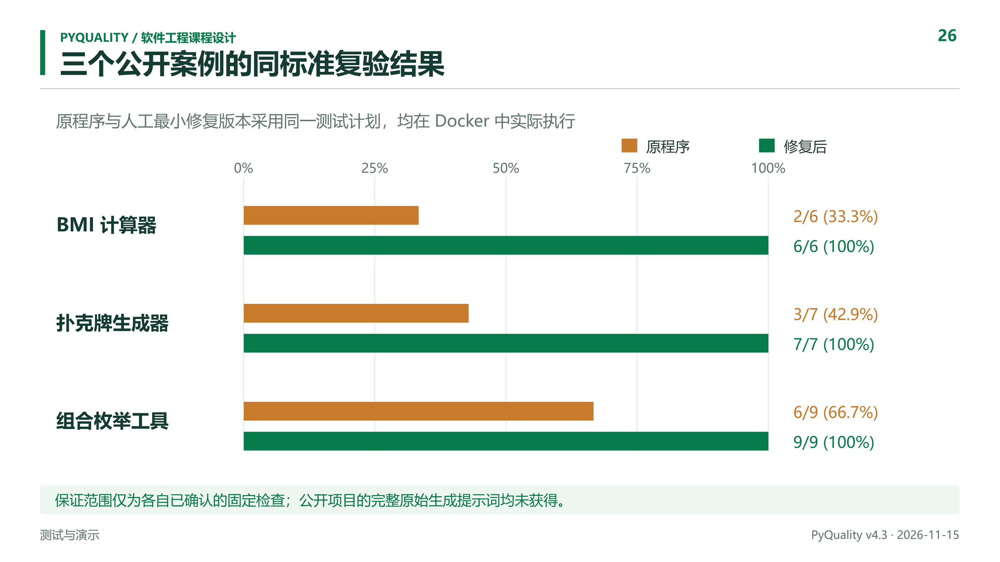
使用已留存报告绘制修复前后固定案例通过比例。
讲述重点：这是三组具体案例的测试结果，不是总体检测准确率或生成成功率。
参考 PDF 第 36, 51, 62 页
docs/public_case/summary.jsondocs/public_cases/copilot_cards/summary.jsondocs/public_cases/copilot_zero_terms/summary.json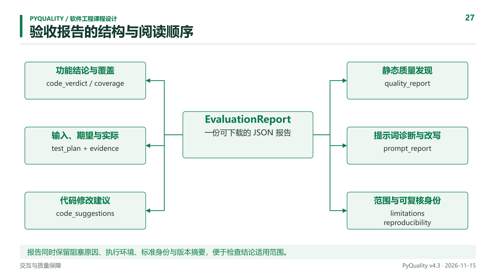
将用户在报告中需要关注的内容映射到实际字段。
讲述重点：先看功能结论，再查失败事实，随后决定如何修改并复验。
参考 PDF 第 42, 43 页
backend/acceptance/models.pyfrontend/acceptance.js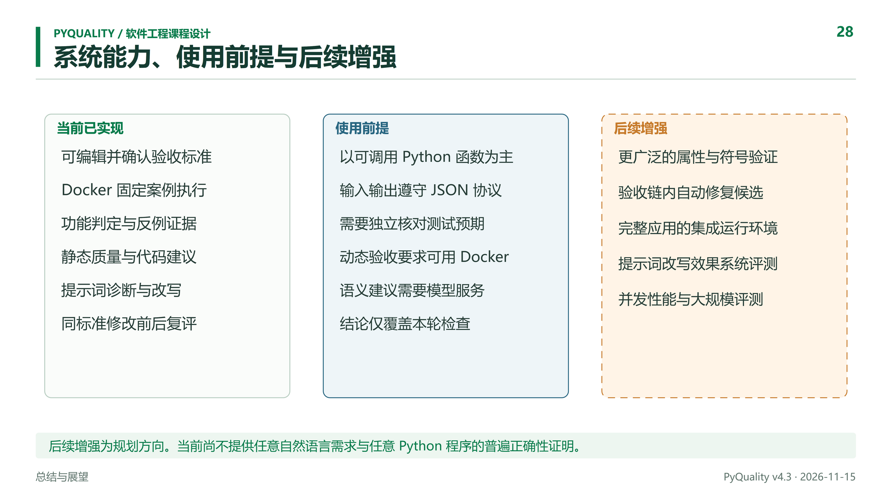
以明确边界收束汇报，区分现有能力和后续方向。
讲述重点：固定案例范围内的实证验收已经形成闭环，更广泛的正确性保证仍需增强。
参考 PDF 第 64 页
docs/workflow_acceptance.mdbackend/acceptance/service.pybackend/acceptance/models.py